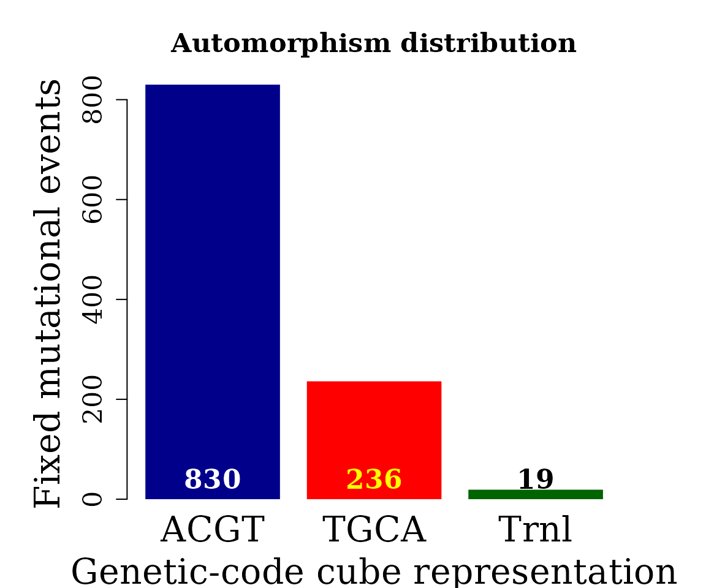
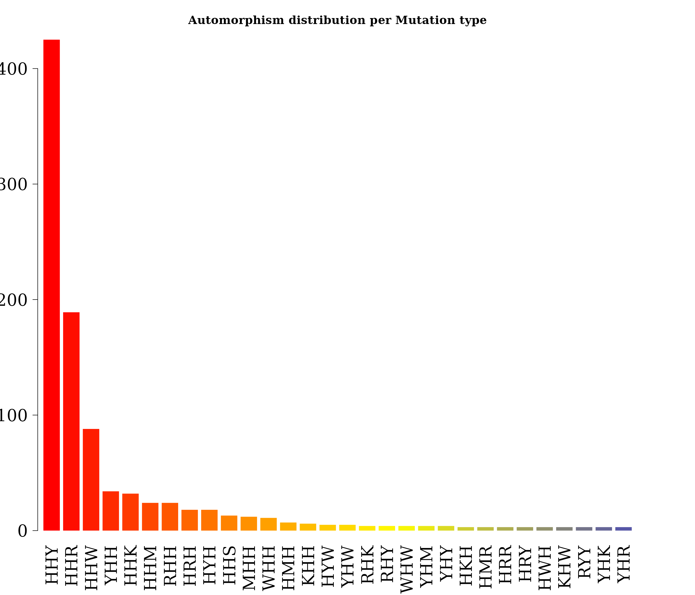
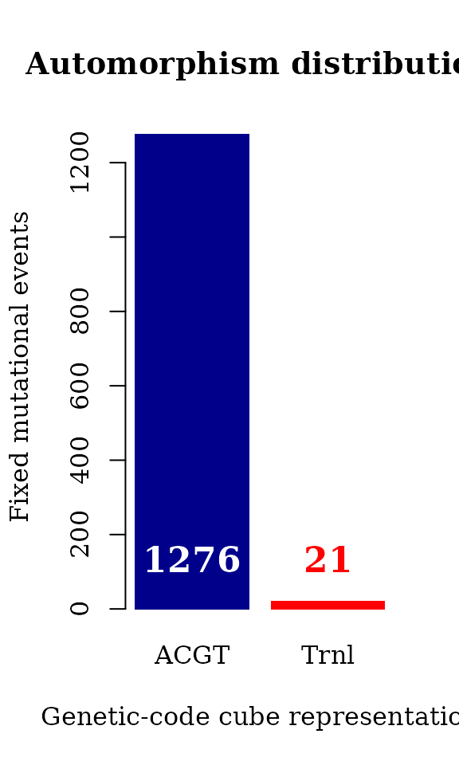
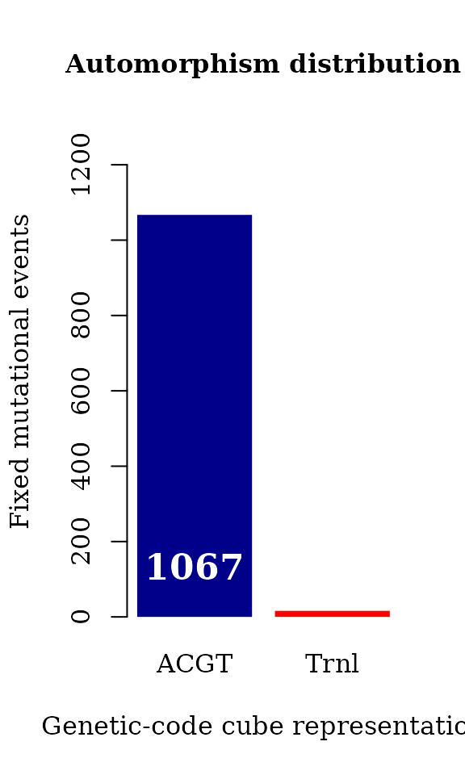

Get started-with GenomAutomorphism
Robersy Sanchez
Department of Biology. Pennsylvania State University, University Park, PA 16802rus547@psu.edu
24 May 2022
Source:vignettes/GenomAutomorphism.Rmd
GenomAutomorphism.RmdAbstract
A fast introduction into the analysis of DNA mutational events by means of automorphisms between two DNA sequences algebraically represented as Abelian finite group.
Overview
This is a R package to compute the autimorphisms between pairwise aligned DNA sequences represented as elements from a Genomic Abelian group as described in reference (1). In a general scenario, whole chromosomes or genomic regions from a population (from any species or close related species) can be algebraically represented as a direct sum of cyclic groups or more specifically Abelian p-groups. Basically, we propose the representation of multiple sequence alignments (MSA) of length N as a finite Abelian group created by the direct sum of Abelian group of prime-power order:
\[ \qquad G = (\mathbb{Z}_{p^{\alpha_{1}}_1})^{n_1} \oplus (\mathbb{Z}_{p^{\alpha_{2}}_1})^{n_2} \oplus \dots \oplus (\mathbb{Z}_{p^{\alpha_{k}}_k})^{n_k} \]
Where, the \(p_i\)’s are prime numbers, \(\alpha_i \in \mathbb{N}\) and \(\mathbb{Z}_{p^{\alpha_{i}}_i}\) is the group of integer modulo \(p^{\alpha_{i}}_i\).
For the purpose of estimating the automorphism between two aligned DNA sequences, \(p^{\alpha_{i}}_i \in \{5, 2^6, 5^3 \}\).
Automorphisms
Herein, automorphisms are considered algebraic descriptions of mutational event observed in codon sequences represented on different Abelian groups. In particular, as described in references (3-4), for each representation of the codon set on a defined Abelian group there are 24 possible isomorphic Abelian groups. These Abelian groups can be labeled based on the DNA base-order used to generate them. The set of 24 Abelian groups can be described as a group isomorphic to the symmetric group of degree four (\(S_4\), see reference (4)).
For further support about the symmetric group on the 24 Abelian group of genetic-code cubes, users can also see Symmetric Group of the Genetic-CodeCubes., specifically the Mathematica notebook IntroductionToZ5GeneticCodeVectorSpace.nb and interact with it using Wolfram Player, freely available (for Windows and Linux OS) at, https://www.wolfram.com/player/.
Load the R libraries
library(Biostrings)
#> Loading required package: BiocGenerics
#>
#> Attaching package: 'BiocGenerics'
#> The following objects are masked from 'package:stats':
#>
#> IQR, mad, sd, var, xtabs
#> The following objects are masked from 'package:base':
#>
#> anyDuplicated, append, as.data.frame, basename, cbind, colnames, dirname, do.call, duplicated, eval,
#> evalq, Filter, Find, get, grep, grepl, intersect, is.unsorted, lapply, Map, mapply, match, mget, order,
#> paste, pmax, pmax.int, pmin, pmin.int, Position, rank, rbind, Reduce, rownames, sapply, setdiff, sort,
#> table, tapply, union, unique, unsplit, which.max, which.min
#> Loading required package: S4Vectors
#> Loading required package: stats4
#>
#> Attaching package: 'S4Vectors'
#> The following objects are masked from 'package:base':
#>
#> expand.grid, I, unname
#> Loading required package: IRanges
#> Loading required package: XVector
#> Loading required package: GenomeInfoDb
#>
#> Attaching package: 'Biostrings'
#> The following object is masked from 'package:base':
#>
#> strsplit
library(GenomAutomorphism)
#>
#> Attaching package: 'GenomAutomorphism'
#> The following objects are masked from 'package:stats':
#>
#> end, startRead the alignment FASTA and encode the sequences
The FASTA file carries the pairwise sequence alignment of protein coding regions SARS coronavirus GZ02 (GenBank: AY390556.1) and Bat SARS-like coronavirus isolate Rs7327 (GenBank: KY417151.1).
URL <- paste0("https://github.com/genomaths/seqalignments/raw/master/",
"COVID-19/AY390556.1_and_KY417151.1_aligned_protein-coding.fas")
covid_aln <- readDNAMultipleAlignment(filepath = URL)
covid_aln
#> DNAMultipleAlignment with 2 rows and 29166 columns
#> aln names
#> [1] ATGGAGAGCCTTGTTCTTGGTGTCAACGAGAAAACACACGTCCAAC...CAAAATTCCATGAGTGGAGCTTCTGCTGATTCAACTCAGGCATAA lcl|AY390556.1_cd...
#> [2] ATGGAGAGCCTTGTTCTTGGTGTCAACGAGAAAACACACGTCCAAC...CAAAATTCCATGAGTGGAGCTTCTGCTGATTCAACTCAGGCATAA lcl|KY417151.1_cd...The DNA sequence is read and the corresponding codon sequences are represented in the Abelian group \(\mathbb{Z}_{64}\) (i.e., the set of integers remainder modulo 64). The codon coordinates are requested on the cube ACGT. Following reference (4)), cubes are labeled based on the order of DNA bases used to define the sum operation.
data(covid_aln, package = "GenomAutomorphism")
codons <- codon_coord(
codon = covid_aln,
cube = "ACGT",
group = "Z64",
chr = 1L,
strand = "+",
start = 1,
end = 750)
codons
#> CodonGroup object with 250 ranges and 4 metadata columns:
#> seqnames ranges strand | seq1 seq2 coord1 coord2
#> <Rle> <IRanges> <Rle> | <character> <character> <character> <character>
#> [1] 1 1 + | AAT AAT 3 3
#> [2] 1 2 + | TGG TGG 46 46
#> [3] 1 3 + | GGG GGG 42 42
#> [4] 1 4 + | GTT GTT 59 59
#> [5] 1 5 + | ACG ACG 18 18
#> ... ... ... ... . ... ... ... ...
#> [246] 1 246 + | CGA CGA 36 36
#> [247] 1 247 + | CGC CGT 37 39
#> [248] 1 248 + | ACG ACG 18 18
#> [249] 1 249 + | CAA CAA 4 4
#> [250] 1 250 + | AGG AGG 34 34
#> -------
#> seqinfo: 1 sequence from an unspecified genome; no seqlengthsThe codon sequences (seq1 and seq2) with their corresponding coordinates (left) are returned, as well as the coordinated representation on \(\mathbb{Z}_{64}\) (coord1 and coord2).
Automorphisms on \(\mathbb{Z}_{64}\)
Automorphisms can be computed starting directly from the FASTA file. Notice that we can work only with genomic regions of our interest by giving the start and end alignment coordinates. In Z64 automorphisms are described as functions \(f(x) = k\,x \quad mod\,64\), where \(k\) and \(x\) are elements from the set of integers modulo 64. Below, in function automorphism three important arguments are given values: group = “Z64”, cube = c(“ACGT”, “TGCA”), and cube_alt = c(“CATG”, “GTAC”). Setting for group specifies on which group the automorphisms will be computed. These groups can be: “Z5”, “Z64”, “Z125”, and “Z5^3”.
In groups “Z64” and “Z125” not all the mutational events can be described as automorphisms from a given cube. So, a character string denoting pairs of “dual” the genetic-code cubes, as given in references (1-4)), is given as argument for cube. That is, the base pairs from the given cubes must be complementary each other. Such a cube pair are call dual cubes and, as shown in reference (4)), each pair integrates group. If automorphisms are not found in first set of dual cubes, then the algorithm search for automorphism in a alternative set of dual cubes.
autm <- automorphisms(
seqs = covid_aln,
group = "Z64",
cube = c("ACGT", "TGCA"),
cube_alt = c("CATG", "GTAC"),
start = 1,
end = 750,
verbose = FALSE)
autm
#> Automorphism object with 250 ranges and 6 metadata columns:
#> seqnames ranges strand | seq1 seq2 coord1 coord2 autm cube
#> <Rle> <IRanges> <Rle> | <character> <character> <numeric> <numeric> <numeric> <character>
#> [1] 1 1 + | AAT AAT 3 3 1 ACGT
#> [2] 1 2 + | TGG TGG 46 46 1 ACGT
#> [3] 1 3 + | GGG GGG 42 42 1 ACGT
#> [4] 1 4 + | GTT GTT 59 59 1 ACGT
#> [5] 1 5 + | ACG ACG 18 18 1 ACGT
#> ... ... ... ... . ... ... ... ... ... ...
#> [246] 1 246 + | CGA CGA 36 36 1 ACGT
#> [247] 1 247 + | CGC CGT 37 39 27 ACGT
#> [248] 1 248 + | ACG ACG 18 18 1 ACGT
#> [249] 1 249 + | CAA CAA 4 4 1 ACGT
#> [250] 1 250 + | AGG AGG 34 34 1 ACGT
#> -------
#> seqinfo: 1 sequence from an unspecified genome; no seqlengthsObserve that two new columns were added, the automorphism coefficient \(k\) (named as autm) and the genetic-code cube where the automorphism was found. By convention the DNA sequence is given for the positive strand. Since the dual cube of “ACGT” corresponds to the complementary base order TGCA, automorphisms described by the cube TGCA represent mutational events affecting the DNA negative strand (-).
The last result can be summarized by gene regions as follow:
aut_range <- automorphismByRanges(autm)
aut_range
#> GRanges object with 9 ranges and 1 metadata column:
#> seqnames ranges strand | cube
#> <Rle> <IRanges> <Rle> | <character>
#> [1] 1 1-43 + | ACGT
#> [2] 1 44 - | TGCA
#> [3] 1 45-105 + | ACGT
#> [4] 1 106 - | TGCA
#> [5] 1 107-117 + | ACGT
#> [6] 1 118 + | Trnl
#> [7] 1 119-211 + | ACGT
#> [8] 1 212 - | TGCA
#> [9] 1 213-250 + | ACGT
#> -------
#> seqinfo: 1 sequence from an unspecified genome; no seqlengthsThat is, function automorphismByRanges permits the classification of the pairwise alignment of protein-coding sub-regions based on the mutational events observed on it quantitatively represented as automorphisms on genetic-code cubes.
Searching for automorphisms on \(\mathbb{Z}_{64}\) permits us a quantitative differentiation between mutational events at different codon positions from a given DNA protein-encoding region. As shown in reference (4) a set of different cubes can be applied to describe the best evolutionary aminoacid scale highly correlated with aminoacid physicochemical properties describing the observed evolutionary process in a given protein.
More information about this subject can be found in the supporting material from reference (4)) at GitHub GenomeAlgebra_SymmetricGroup, particularly by interacting with the Mathematica notebook Genetic-Code-Scales_of_Amino-Acids.nb.
Automorphisms between whole genomes of SARS-CoV-2 related coronaviruses
Next, the automorphism for the whole pairwise alignment of SARS-CoV-2 related coronaviruses:
## Do not need to run it.
covid_autm <- automorphisms(
seq = covid_aln,
group = "Z64",
cube = c("ACGT", "TGCA"),
cube_alt = c("CATG", "GTAC"),
verbose = FALSE)This data is available with the package
data(covid_autm, package = "GenomAutomorphism")
covid_autm
#> Automorphism object with 9722 ranges and 6 metadata columns:
#> seqnames ranges strand | seq1 seq2 coord1 coord2 autm cube
#> <Rle> <IRanges> <Rle> | <character> <character> <numeric> <numeric> <numeric> <character>
#> [1] 1 1 + | ATG ATG 50 50 1 ACGT
#> [2] 1 2 + | GAG GAG 10 10 1 ACGT
#> [3] 1 3 + | AGC AGC 33 33 1 ACGT
#> [4] 1 4 + | CTT CTT 55 55 1 ACGT
#> [5] 1 5 + | GTT GTT 59 59 1 ACGT
#> ... ... ... ... . ... ... ... ... ... ...
#> [9718] 1 9718 + | TCA TCA 28 28 1 ACGT
#> [9719] 1 9719 + | ACT ACT 19 19 1 ACGT
#> [9720] 1 9720 + | CAG CAG 6 6 1 ACGT
#> [9721] 1 9721 + | GCA GCA 24 24 1 ACGT
#> [9722] 1 9722 + | TAA TAA 12 12 1 ACGT
#> -------
#> seqinfo: 1 sequence from an unspecified genome; no seqlengthsAnd the summary by range
aut_range <- automorphismByRanges(covid_autm)
aut_range
#> GRanges object with 460 ranges and 1 metadata column:
#> seqnames ranges strand | cube
#> <Rle> <IRanges> <Rle> | <character>
#> [1] 1 1-102 + | ACGT
#> [2] 1 103 - | TGCA
#> [3] 1 104-105 + | ACGT
#> [4] 1 106 - | TGCA
#> [5] 1 107-201 + | ACGT
#> ... ... ... ... . ...
#> [456] 1 9577-9608 + | ACGT
#> [457] 1 9609 - | TGCA
#> [458] 1 9610-9674 + | ACGT
#> [459] 1 9675 - | TGCA
#> [460] 1 9676-9722 + | ACGT
#> -------
#> seqinfo: 1 sequence from an unspecified genome; no seqlengthsRegions no described by automorphism can be described as translations (labeled “Trnl”) and they can be shown as follow:
idx = which(covid_autm$cube == "Trnl")
covid_autm[ idx ]
#> Automorphism object with 19 ranges and 6 metadata columns:
#> seqnames ranges strand | seq1 seq2 coord1 coord2 autm cube
#> <Rle> <IRanges> <Rle> | <character> <character> <numeric> <numeric> <numeric> <character>
#> [1] 1 916 + | AAC AAA 1 0 0 Trnl
#> [2] 1 944 + | --- CCG NA 22 0 Trnl
#> [3] 1 971 + | ACA --- 16 NA 0 Trnl
#> [4] 1 7077 + | --- AAA NA 0 0 Trnl
#> [5] 1 9109 + | AAT AAA 3 0 0 Trnl
#> ... ... ... ... . ... ... ... ... ... ...
#> [15] 1 9277 + | CTT --- 55 NA 0 Trnl
#> [16] 1 9278 + | CAT --- 7 NA 0 Trnl
#> [17] 1 9279 + | GAA --- 8 NA 0 Trnl
#> [18] 1 9295 + | AAA --- 0 NA 0 Trnl
#> [19] 1 9296 + | CGA --- 36 NA 0 Trnl
#> -------
#> seqinfo: 1 sequence from an unspecified genome; no seqlengthsThese codon positions cover insertion-deletion (indel) mutational events. The wholes regions can be summarized typing:
idx = which(aut_range$cube == "Trnl")
aut_range[ idx ]
#> GRanges object with 13 ranges and 1 metadata column:
#> seqnames ranges strand | cube
#> <Rle> <IRanges> <Rle> | <character>
#> [1] 1 916 + | Trnl
#> [2] 1 944 + | Trnl
#> [3] 1 971 + | Trnl
#> [4] 1 7077 + | Trnl
#> [5] 1 9109 + | Trnl
#> ... ... ... ... . ...
#> [9] 1 9244-9245 + | Trnl
#> [10] 1 9247 + | Trnl
#> [11] 1 9257 + | Trnl
#> [12] 1 9277-9279 + | Trnl
#> [13] 1 9295-9296 + | Trnl
#> -------
#> seqinfo: 1 sequence from an unspecified genome; no seqlengthsOnly one indel mutation was found in the region where the spike glycoprotein is located: 7076 - 8331.
That is, the pairwise alignment of SARS coronavirus GZ02 and Bat SARS-like coronavirus (bat-SL-CoVZC45) reveals four single indel mutational events and four regions with multiple indel mutations. In general, indel mutational event can be modeled as translations on \(\mathbb{Z}_{64}\).
Bar plot automorphism distribution by cubes
The automorphism distribution by cubes can be summarized in the bar-plot graphic
counts <- table(covid_autm$cube[ covid_autm$autm != 1 |
is.na(covid_autm$autm) ])
par(family = "serif", cex = 0.9, font = 2, mar=c(4,6,4,4))
barplot(counts, main="Automorphism distribution",
xlab="Genetic-code cube representation",
ylab="Fixed mutational events",
col=c("darkblue","red", "darkgreen"),
border = NA, axes = FALSE,
cex.lab = 2, cex.main = 1.5, cex.names = 2)
axis(2, at = c(0, 200, 400, 600, 800), cex.axis = 1.5)
mtext(side = 1,line = -1.5, at = c(0.7, 1.9, 3.1, 4.3, 5.5),
text = paste0( counts ), cex = 1.4,
col = c("white","yellow", "black"))
Grouping automorphism by automorphism’s coefficients. Types of mutations
autby_coef <- automorphism_bycoef(covid_autm)
autby_coef <- autby_coef[ autby_coef$autm != 1 & autby_coef$autm != -1 ]Barplot of frequency of mutation types greater than 2.
counts <- table(autby_coef$mut_type)
counts <- sort(counts, decreasing = TRUE)
count. <- counts[ counts > 2 ]
par(family = "serif", cex.axis = 2, font = 2, las = 1,
cex.main = 1.4, mar = c(6,2,4,4))
barplot(count., main="Automorphism distribution per Mutation type",
col = colorRampPalette(c("red", "yellow", "blue"))(36),
border = NA, axes = FALSE,las=2)
axis(side = 2, cex.axis = 2, line = -1.8 )
Every single base mutational event across the MSA was classified according IUPAC nomenclature: 1) According to the number of hydrogen bonds (on DNA/RNA double helix): strong S={C, G} (three hydrogen bonds) and weak W={A, U} (two hydrogen bonds). According to the chemical type: purines R={A, G} and pyrimidines Y={C, U}. 3). According to the presence of amino or keto groups on the base rings: amino M={C, A} and keto K={G, T}. Constant (hold) base positions were labeled with letter H. So, codon positions labeled as HKH means that the first and third bases remains constant and mutational events between bases G and T were found in the MSA.
counts
#>
#> HHY HHR HHW YHH HHK HHM RHH HRH HYH HHS MHH WHH HMH KHH HYW YHW RHK RHY WHW YHM YHY HKH HMR HRR HRY HWH KHW RYY YHK YHR
#> 425 189 88 34 32 24 24 18 18 13 12 11 7 6 5 5 4 4 4 4 4 3 3 3 3 3 3 3 3 3
#> HMW HYK KHY KSW MHK MHW MRH RHM RHR RHW RKW RMH RMW RRY RSW RYH RYW SHH SHW SRH WMH WMS WSY YWH HKR HMK HMY HSR HWS HWW
#> 2 2 2 2 2 2 2 2 2 2 2 2 2 2 2 2 2 2 2 2 2 2 2 2 1 1 1 1 1 1
#> HWY HYR HYY KHK KHR KKS KMH KMW KRK KRY KSH MHR MHS MKM MMM MRM MWH MWM MWS MWW MYY RMY RRK RRM RSK RYK SHM SHY SKY SMW
#> 1 1 1 1 1 1 1 1 1 1 1 1 1 1 1 1 1 1 1 1 1 1 1 1 1 1 1 1 1 1
#> SRM SWR SWY SYH WHY WRH WRY WWH WWK WWS WWY WYH WYM WYW YHS YKH YKY YRY YWM YWW YWY YYH YYR
#> 1 1 1 1 1 1 1 1 1 1 1 1 1 1 1 1 1 1 1 1 1 1 1The analysis of the frequency of mutational events (automorphisms, COVID: human vs bat 610 strains) by mutation types is shown in Fig 8a. Results are consistent with the well-known observation highlighted by Crick: the highest mutational rate is found in the third base of the codon (HHY: 425, HHR: 189, HHW: 88), followed by YHH: 34 in the first base, and the lowest rate is found in the second one (5).
Conserved and non-conserved regions
Conserved regions
Conserved and non-conserved gene regions can be easily observed in most of MSA editing bioinformatic tools. However, here were interesting into get the regions coordinates for further downstream analysis.
Conserved regions from pairwise comparisons are obtain with function conserved_regions:
conserv <- conserved_regions(covid_autm)
conserv
#> AutomorphismByCoef object with 6348 ranges and 5 metadata columns:
#> seqnames ranges strand | seq1 seq2 autm mut_type cube
#> <Rle> <IRanges> <Rle> | <character> <character> <numeric> <character> <character>
#> [1] 1 1-19 + | ATG ATG 1 HHH ACGT
#> [2] 1 1-19 + | GAG GAG 1 HHH ACGT
#> [3] 1 1-19 + | AGC AGC 1 HHH ACGT
#> [4] 1 1-19 + | CTT CTT 1 HHH ACGT
#> [5] 1 1-19 + | GTT GTT 1 HHH ACGT
#> ... ... ... ... . ... ... ... ... ...
#> [6344] 1 9683-9722 + | GGA GGA 1 HHH ACGT
#> [6345] 1 9683-9722 + | TCT TCT 1 HHH ACGT
#> [6346] 1 9683-9722 + | TCA TCA 1 HHH ACGT
#> [6347] 1 9683-9722 + | GCA GCA 1 HHH ACGT
#> [6348] 1 9683-9722 + | TAA TAA 1 HHH ACGT
#> -------
#> seqinfo: 1 sequence from an unspecified genome; no seqlengthsSeveral regions are similar for more than one comparison.
conserv_unique <- conserved_regions(covid_autm, output = "unique")
conserv_unique
#> GRanges object with 744 ranges and 2 metadata columns:
#> seqnames ranges strand | autm cube
#> <Rle> <IRanges> <Rle> | <numeric> <character>
#> [1] 1 1-19 + | 1 ACGT
#> [2] 1 21-44 + | 1 ACGT
#> [3] 1 47-52 + | 1 ACGT
#> [4] 1 54-60 + | 1 ACGT
#> [5] 1 62-80 + | 1 ACGT
#> ... ... ... ... . ... ...
#> [740] 1 9610-9614 + | 1 ACGT
#> [741] 1 9616-9648 + | 1 ACGT
#> [742] 1 9650-9674 + | 1 ACGT
#> [743] 1 9676-9681 + | 1 ACGT
#> [744] 1 9683-9722 + | 1 ACGT
#> -------
#> seqinfo: 1 sequence from an unspecified genome; no seqlengthsAutomorphisms on \(\mathbb{Z}_{125}\)
Alternatively, we can use the algebraic representation on on \(\mathbb{Z}_{125}\).
covid_autm_2 <- automorphisms(
seq = covid_aln,
group = "Z125",
cube = c("ACGT", "TGCA"),
cube_alt = c("CATG", "GTAC"),
verbose = FALSE)
covid_autm_2
#> Automorphism object with 9722 ranges and 6 metadata columns:
#> seqnames ranges strand | seq1 seq2 coord1 coord2 autm cube
#> <Rle> <IRanges> <Rle> | <character> <character> <numeric> <numeric> <numeric> <character>
#> [1] 1 1 + | AGA AGA 81 81 1 ACGT
#> [2] 1 2 + | TAT TAT 49 49 1 ACGT
#> [3] 1 3 + | GGG GGG 93 93 1 ACGT
#> [4] 1 4 + | GTT GTT 119 119 1 ACGT
#> [5] 1 5 + | AGT AGT 84 84 1 ACGT
#> ... ... ... ... . ... ... ... ... ... ...
#> [9718] 1 9718 + | CTC CTC 112 112 1 ACGT
#> [9719] 1 9719 + | TGA TGA 96 96 1 ACGT
#> [9720] 1 9720 + | GTT GTT 119 119 1 ACGT
#> [9721] 1 9721 + | CTA CTA 111 111 1 ACGT
#> [9722] 1 9722 + | AAA AAA 31 31 1 ACGT
#> -------
#> seqinfo: 1 sequence from an unspecified genome; no seqlengthsAnd the summary by range
aut_range_2 <- automorphismByRanges(covid_autm_2)
aut_range_2
#> GRanges object with 9 ranges and 1 metadata column:
#> seqnames ranges strand | cube
#> <Rle> <IRanges> <Rle> | <character>
#> [1] 1 1-1784 + | ACGT
#> [2] 1 1785-1787 + | Trnl
#> [3] 1 1788-8117 + | ACGT
#> [4] 1 8118-8123 + | Trnl
#> [5] 1 8124-8255 + | ACGT
#> [6] 1 8256-8261 + | Trnl
#> [7] 1 8262-8285 + | ACGT
#> [8] 1 8286-8291 + | Trnl
#> [9] 1 8292-9722 + | ACGT
#> -------
#> seqinfo: 1 sequence from an unspecified genome; no seqlengthsThe whole genome can be described by automorphisms on \(\mathbb{Z}_{125}\).
counts <- table(covid_autm_2$cube[ covid_autm_2$autm != 1 ])
par(family = "serif", cex = 1, font = 2)
barplot(counts, main="Automorphism distribution",
xlab="Genetic-code cube representation",
ylab="Fixed mutational events",
col=c("darkblue","red"),
ylim = c(0, 1300),
border = NA, axes = TRUE)
mtext(side = 1,line = -2, at = c(0.7, 1.9, 3.1),
text = paste0( counts ), cex = 1.4,
col = c("white","red"))
Automorphisms on the Genetic-code Cube Representation
The Genetic-code Cube Representations on the Galois Field GF(5) were studied in (4). Each codon is represented by each coordinate in the 3D space.
Automorphisms are represented by diagonal matrices, with elements \(x\) in \(x \in \mathbb{Z}_5\).
covid_autm_3 <- automorphisms(
seq = covid_aln,
group = "Z5^3",
cube = c("ACGT", "TGCA"),
cube_alt = c("CATG", "GTAC"),
verbose = FALSE)
covid_autm_3
#> Automorphism object with 9722 ranges and 6 metadata columns:
#> seqnames ranges strand | seq1 seq2 coord1 coord2 autm cube
#> <Rle> <IRanges> <Rle> | <character> <character> <matrix> <matrix> <character> <character>
#> [1] 1 1 + | AGA AGA 1:3:1 1:3:1 1,1,1 ACGT
#> [2] 1 2 + | TAT TAT 4:1:4 4:1:4 1,1,1 ACGT
#> [3] 1 3 + | GGG GGG 3:3:3 3:3:3 1,1,1 ACGT
#> [4] 1 4 + | GTT GTT 3:4:4 3:4:4 1,1,1 ACGT
#> [5] 1 5 + | AGT AGT 1:3:4 1:3:4 1,1,1 ACGT
#> ... ... ... ... . ... ... ... ... ... ...
#> [9718] 1 9718 + | CTC CTC 2:4:2 2:4:2 1,1,1 ACGT
#> [9719] 1 9719 + | TGA TGA 4:3:1 4:3:1 1,1,1 ACGT
#> [9720] 1 9720 + | GTT GTT 3:4:4 3:4:4 1,1,1 ACGT
#> [9721] 1 9721 + | CTA CTA 2:4:1 2:4:1 1,1,1 ACGT
#> [9722] 1 9722 + | AAA AAA 1:1:1 1:1:1 1,1,1 ACGT
#> -------
#> seqinfo: 1 sequence from an unspecified genome; no seqlengthsGrouping automorphism by automorphism’s coefficients
Automorphisms that preserved codons (DNA base-triplets) are represented by the identity matrix, i.e., the matrix with diagonal elements “1,1,1”.
autby_coef_3 <- automorphism_bycoef(covid_autm_3)
autby_coef_3 <- autby_coef_3[ autby_coef_3$autm != "1,1,1" ]
autby_coef_3
#> AutomorphismByCoef object with 1249 ranges and 5 metadata columns:
#> seqnames ranges strand | seq1 seq2 autm mut_type cube
#> <Rle> <IRanges> <Rle> | <character> <character> <character> <character> <character>
#> [1] 1 28 + | GGG GAG 1,2,1 HRH ACGT
#> [2] 1 46 + | CAC CGC 1,3,1 HRH ACGT
#> [3] 1 60 + | CTC TTC 2,1,1 YHH ACGT
#> [4] 1 77 + | TAT TAC 1,1,3 HHY ACGT
#> [5] 1 97 + | GGT GAT 1,2,1 HRH ACGT
#> ... ... ... ... . ... ... ... ... ...
#> [1245] 1 9649 + | ATC ACC 1,3,1 HYH ACGT
#> [1246] 1 9663 + | CAT TAT 2,1,1 YHH ACGT
#> [1247] 1 9680 + | TAA TGA 1,3,1 HRH ACGT
#> [1248] 1 9688 + | CGT CAT 1,2,1 HRH ACGT
#> [1249] 1 9703 + | ATC ACC 1,3,1 HYH ACGT
#> -------
#> seqinfo: 1 sequence from an unspecified genome; no seqlengthsConserved regions from pairwise comparisons are obtain with function conserved_regions:
conserv <- conserved_regions(covid_autm_3)
conserv
#> AutomorphismByCoef object with 6964 ranges and 5 metadata columns:
#> seqnames ranges strand | seq1 seq2 autm mut_type cube
#> <Rle> <IRanges> <Rle> | <character> <character> <character> <character> <character>
#> [1] 1 1-27 + | AGA AGA 1,1,1 HHH ACGT
#> [2] 1 1-27 + | TAT TAT 1,1,1 HHH ACGT
#> [3] 1 1-27 + | GGG GGG 1,1,1 HHH ACGT
#> [4] 1 1-27 + | GTT GTT 1,1,1 HHH ACGT
#> [5] 1 1-27 + | AGT AGT 1,1,1 HHH ACGT
#> ... ... ... ... . ... ... ... ... ...
#> [6960] 1 9704-9722 + | CTC CTC 1,1,1 HHH ACGT
#> [6961] 1 9704-9722 + | TGA TGA 1,1,1 HHH ACGT
#> [6962] 1 9704-9722 + | GTT GTT 1,1,1 HHH ACGT
#> [6963] 1 9704-9722 + | CTA CTA 1,1,1 HHH ACGT
#> [6964] 1 9704-9722 + | AAA AAA 1,1,1 HHH ACGT
#> -------
#> seqinfo: 1 sequence from an unspecified genome; no seqlengthsThe whole genome mutational events represented as automorphisms on the 3D space \(\mathbb{Z}_{5}^3\), specifically on the cube ACGT (see 4).
counts <- table(autby_coef_3$cube[ autby_coef_3$autm != "1,1,1"])
par(family = "serif", cex = 1, font = 2, cex.main = 1)
barplot(counts, main="Automorphism distribution",
xlab="Genetic-code cube representation",
ylab="Fixed mutational events",
col=c("darkblue","red"),
ylim = c(0, 1300),
border = NA, axes = TRUE)
mtext(side = 1,line = -2, at = c(0.7, 1.9),
text = paste0( counts ), cex = 1.4,
col = c("white"))
References
1. Sanchez R, Morgado E, Grau R. Gene algebra from a
genetic code algebraic structure. J Math Biol. 2005 Oct;51(4):431-57.
doi:10.1007/s00285-005-0332-8. Epub 2005 Jul 13. PMID: 16012800.
<https://arxiv.org/pdf/q-bio/0412033.pdf>.
2. Robersy Sanchez, Jesus Barreto (2021) Genomic Abelian
Finite Groups.
<https://doi.org/10.1101/2021.06.01.446543>.
3. M. V Jose, E.R. Morgado, R. Sanchez, T. Govezensky, The
24 possible algebraic representations of the standard genetic code in six
or in three dimensions, Adv. Stud. Biol. 4 (2012) 119-152.
<https://is.gd/na9eap>.
4. R. Sanchez. Symmetric Group of the Genetic-Code Cubes.
Effect of the Genetic-Code Architecture on the Evolutionary Process MATCH
Commun. Math. Comput. Chem. 79 (2018) 527-560.
<https://bit.ly/2Z9mjM7>.
5. Crick FHC. The Origin of the Genetic Code. J Mol Biol.
1968;38: 367–379.Session info
Here is the output of sessionInfo() on the system on which this document was compiled:
#> R version 4.1.1 (2021-08-10)
#> Platform: x86_64-pc-linux-gnu (64-bit)
#> Running under: CentOS Linux 7 (Core)
#>
#> Matrix products: default
#> BLAS/LAPACK: /usr/lib64/libopenblasp-r0.3.3.so
#>
#> locale:
#> [1] LC_CTYPE=en_US.UTF-8 LC_NUMERIC=C LC_TIME=en_US.UTF-8 LC_COLLATE=en_US.UTF-8
#> [5] LC_MONETARY=en_US.UTF-8 LC_MESSAGES=en_US.UTF-8 LC_PAPER=en_US.UTF-8 LC_NAME=C
#> [9] LC_ADDRESS=C LC_TELEPHONE=C LC_MEASUREMENT=en_US.UTF-8 LC_IDENTIFICATION=C
#>
#> attached base packages:
#> [1] stats4 stats graphics grDevices utils datasets methods base
#>
#> other attached packages:
#> [1] GenomAutomorphism_0.1.0 Biostrings_2.62.0 GenomeInfoDb_1.30.1 XVector_0.34.0
#> [5] IRanges_2.28.0 S4Vectors_0.32.4 BiocGenerics_0.40.0 BiocStyle_2.20.2
#>
#> loaded via a namespace (and not attached):
#> [1] assertthat_0.2.1 rprojroot_2.0.2 digest_0.6.27 foreach_1.5.1 utf8_1.2.2
#> [6] R6_2.5.0 evaluate_0.14 highr_0.9 pillar_1.6.1 zlibbioc_1.40.0
#> [11] rlang_0.4.11 data.table_1.14.2 jquerylib_0.1.4 rmarkdown_2.11 pkgdown_2.0.2
#> [16] textshaping_0.3.5 desc_1.3.0 BiocParallel_1.28.3 stringr_1.4.0 numbers_0.8-2
#> [21] RCurl_1.98-1.5 compiler_4.1.1 xfun_0.24 pkgconfig_2.0.3 systemfonts_1.0.2
#> [26] htmltools_0.5.2 tidyselect_1.1.1 tibble_3.1.2 GenomeInfoDbData_1.2.7 bookdown_0.24
#> [31] codetools_0.2-18 fansi_0.5.0 crayon_1.4.1 dplyr_1.0.7 bitops_1.0-7
#> [36] jsonlite_1.7.2 lifecycle_1.0.0 DBI_1.1.2 magrittr_2.0.1 stringi_1.6.2
#> [41] cachem_1.0.5 fs_1.5.0 doParallel_1.0.17 bslib_0.3.1 ellipsis_0.3.2
#> [46] ragg_1.1.3 generics_0.1.0 vctrs_0.3.8 iterators_1.0.13 tools_4.1.1
#> [51] glue_1.4.2 purrr_0.3.4 parallel_4.1.1 fastmap_1.1.0 yaml_2.2.1
#> [56] BiocManager_1.30.16 GenomicRanges_1.44.0 memoise_2.0.0 knitr_1.33 sass_0.4.0